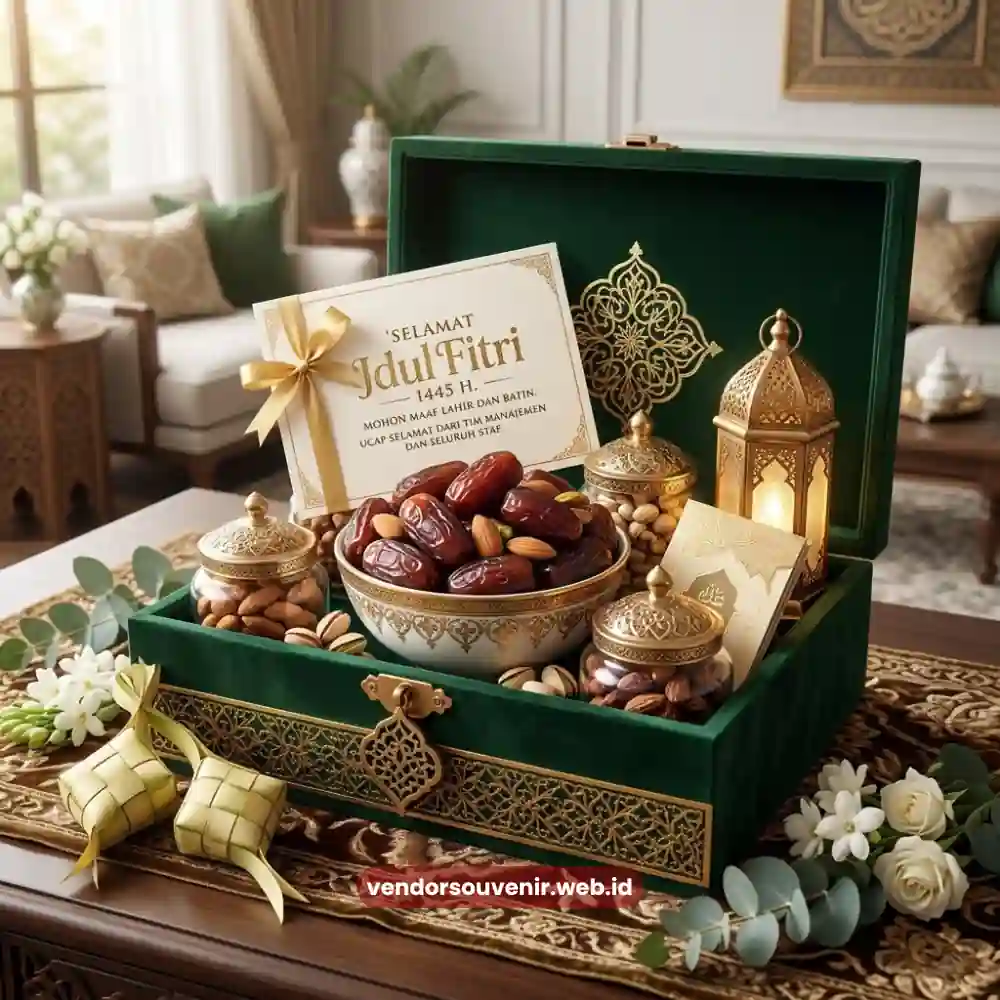

Daftar Isi
Isi hampers lebaran kantor yang menarik saat ini tidak lagi terbatas pada biskuit dan sirup standar. Kombinasi kurma premium, produk UMKM lokal, dan sentuhan personal seperti kartu ucapan bertema perusahaan kini menjadi favorit.
Pergeseran ini terjadi karena karyawan dan klien semakin mengapresiasi hadiah yang terasa personal dan berbeda dari tahun ke tahun. Perusahaan yang ingin memberi kesan mendalam perlu mempertimbangkan variasi isi yang lebih segar dibanding paket generik.
- Tren isi hampers bergeser dari produk standar menuju kombinasi premium dan lokal.
- Produk UMKM lokal semakin diminati karena mendukung nilai keberlanjutan dan cerita di baliknya.
- Sentuhan personal seperti kartu ucapan meningkatkan kesan emosional penerima hampers.
- Kombinasi isi sehat mulai menjadi alternatif bagi perusahaan dengan budaya kerja modern.
- Variasi isi yang tepat membantu memperkuat citra perusahaan sebagai pemberi kerja yang peduli.
Mengapa Variasi Isi Hampers Lebaran Kantor Semakin Penting?
Variasi isi hampers menjadi penting karena penerima hadiah, baik karyawan maupun klien, cenderung membandingkan hampers yang mereka terima dari tahun ke tahun. Isi yang monoton dapat menurunkan nilai apresiasi meskipun kemasan terlihat mewah secara visual.
Selain faktor kebosanan, pergeseran preferensi konsumen terhadap produk yang lebih sehat dan berkelanjutan mendorong perusahaan mempertimbangkan komposisi baru. Produk dengan cerita, seperti hasil UMKM binaan daerah tertentu, memberikan nilai tambah naratif yang unik dan bermakna.
Apa Saja Kombinasi Isi Hampers Lebaran Kantor yang Sedang Diminati?
Kombinasi isi hampers yang sedang diminati saat ini umumnya memadukan produk makanan kering premium, kurma pilihan, dan elemen produk lokal. Kombinasi ini dianggap lebih relevan dengan selera penerima hadiah masa kini sebagai pembeda dari paket standar.
Kurma dan Camilan Premium
Kurma tetap menjadi elemen inti hampers lebaran karena erat kaitannya dengan tradisi berbuka puasa. Namun, preferensi bergeser ke varietas kurma premium dengan kemasan individual yang elegan dibanding kemasan plastik sederhana.
Camilan premium seperti kue kering dengan kemasan eksklusif juga semakin diminati sebagai pengganti biskuit kalengan generik. Ini memberikan kesan lebih personal dan bernilai saat dibuka oleh penerima.
Produk UMKM Lokal sebagai Pembeda
Menambahkan satu produk UMKM lokal, misalnya kopi daerah tertentu atau camilan khas, memberikan cerita yang membuat hampers bermakna. Elemen ini juga sejalan dengan semangat mendukung ekonomi lokal yang relevan bagi citra perusahaan modern.
Sentuhan Personal Melalui Kartu Ucapan
Kartu ucapan yang berisi pesan singkat dari manajemen perusahaan mampu meningkatkan kesan emosional penerima hampers. Elemen sederhana ini sering menjadi pembeda utama antara hampers yang terasa formal dan yang terasa tulus.

Kurma Premium dan Kartu Ucapan sebagai Sentuhan Personal
Apakah Isi Hampers Sehat Bisa Menjadi Alternatif?
Isi hampers dengan pendekatan lebih sehat, seperti kurma tanpa tambahan gula berlebih atau camilan rendah minyak, mulai menjadi tren. Pendekatan ini sangat relevan untuk perusahaan dengan budaya kerja modern yang mengutamakan kesejahteraan karyawan.
Meski demikian, komposisi isi tetap perlu mempertimbangkan preferensi mayoritas penerima. Tujuannya agar hampers tetap terasa istimewa dan tidak terkesan membatasi kenikmatan momen spesial Lebaran.
Bagaimana Menyesuaikan Isi Hampers dengan Segmentasi Penerima?
Isi hampers sebaiknya disesuaikan dengan segmentasi penerima, seperti komposisi sederhana untuk level staf dan lebih premium untuk klien strategis. Pendekatan ini membantu menjaga anggaran proporsional tanpa mengurangi kesan apresiasi secara keseluruhan.
Segmentasi semacam ini umumnya didiskusikan bersama tim konsultan hampers. Dengan begitu, kombinasi isi tetap konsisten secara visual meskipun berbeda pada setiap tingkatan level anggaran.
Menentukan isi hampers yang tepat membutuhkan keseimbangan antara tren terkini, anggaran, dan preferensi penerima. Kombinasi kurma premium, UMKM lokal, dan sentuhan personal mampu meningkatkan apresiasi tanpa mengorbankan efisiensi.

Solusi Hampers dari Vendor Terpercaya
Butuh Bantuan Memilih Isi Hampers Lebaran?
Tim ahli kami siap membantu Anda menyusun paket hadiah eksklusif yang menarik.
Pilihan barang akan disesuaikan dengan ketersediaan budget dan kebutuhan Anda.
Seluruh desain kemasan akan kami selaraskan dengan identitas visual perusahaan Anda.
Dapatkan penawaran harga terbaik untuk pesanan massal!
FAQ Seputar Isi Hampers Lebaran
Apakah isi hampers bisa dikombinasikan sesuai anggaran tertentu?
Bisa, kombinasi isi dapat disesuaikan dengan anggaran per paket yang telah ditentukan perusahaan.
Apakah produk UMKM lokal aman untuk pengiriman jarak jauh?
Umumnya aman selama dikemas dengan standar pengemasan yang tepat sesuai jenis produknya.
Apakah isi hampers sehat lebih mahal dibanding isi standar?
Harga dapat bervariasi tergantung jenis produk sehat yang dipilih, tidak selalu lebih mahal dibanding isi standar.
Maroon Souvenir
Partner Corporate Gift terpercaya di Indonesia. Berpengalaman melayani ratusan perusahaan sejak 2018.
Lihat Portofolio Kami